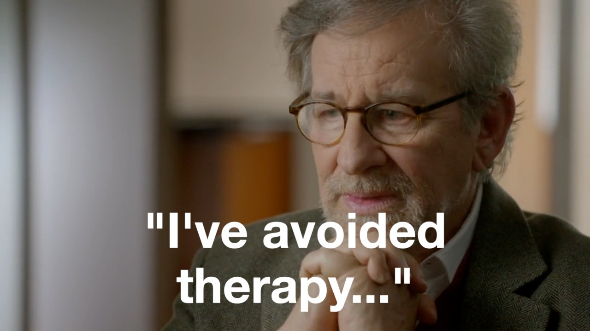
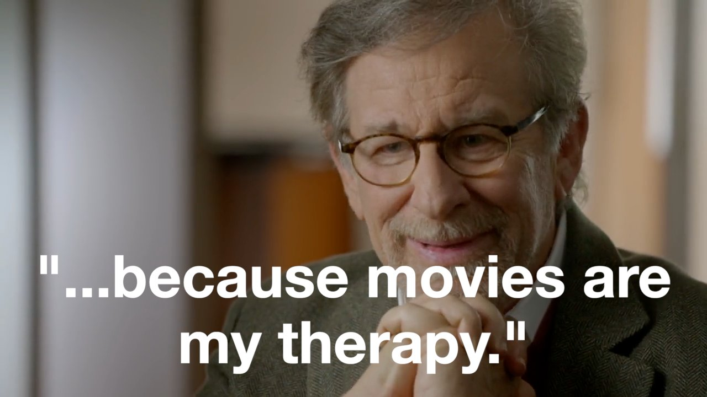
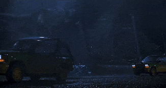
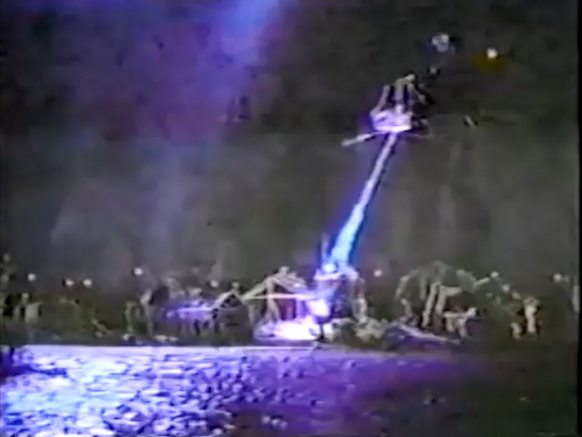
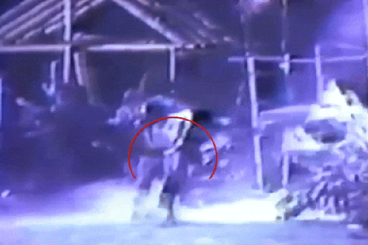
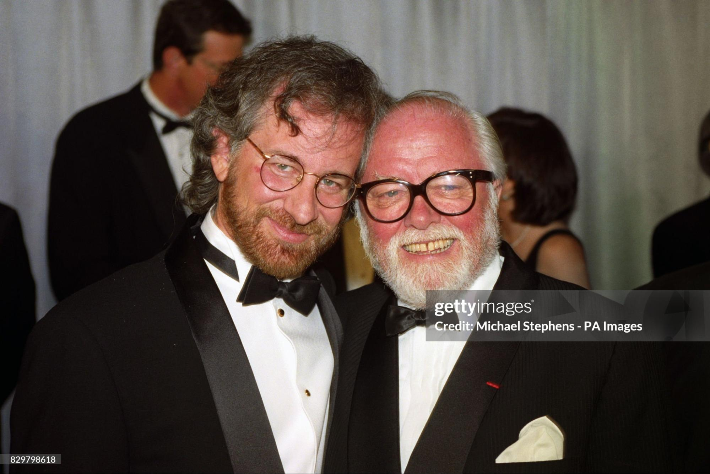
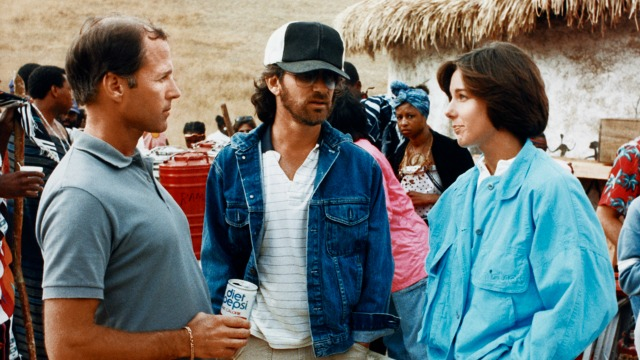

Suppose that Steven Spielberg’s mid-career magnum opus, Jurassic Park (1993), reflects the filmmaker’s guilty feelings about his involvement in the illegal hiring of two children killed on a “Steven Spielberg Production” in 1982. Even if true, why would this discovery matter, all these years later, in today’s far more cynical times?



In my seminal media essay, IJPAUC? (2025), I argue that Jurassic Park (1993) is an unconscious confession. By that I mean that when Spielberg’s emphasis on the pertinence of autobiography to his work is taken seriously, the evidence is overwhelming that the ’90s blockbuster bears heavy imprints of the notorious 1982 Twilight Zone: The Movie helicopter accident that took the lives of two illegally hired child “extras,” Myca Dinh Le (7) and Renee Shin-Yi Chen (6), along with veteran Hollywood actor Vic Morrow (53).


I am not the first to make the connection between Jurassic Park and the Twilight Zone accident; I am, however, the first to ask whether it constitutes a “confession.” In other words, I consider Jurassic Park and its cultural legacy in light of the unanswered—and indeed largely unasked—question of whether the film’s co-producer, Spielberg, in any way (perhaps indirectly) sanctioned the illegal hiring, and whether this might not help explain some of the dense and myriad allusions to the accident underlying the film’s ironical, self-referential, “hypervisible” commercialism (in the words of film theorist Constance Balides).
So far, the question of assigning responsibility for the tragedy is eclipsed by the screaming, bullying maniac who’d been calling the shots that night, director John Landis, already a major figure in the American cinematic imagination. Yet someone else, orders of magnitude more significant to the cinema arts, is also implicated; or, at least, has been shielded from the question by those who were.
In the three books written about the case (Special Effects (LaBrecque, 1988); Outrageous Conduct (Farber and Green, 1988); Fly by Night (Chain, 2021)), each by reporters who sat in on the trial, the question of Spielberg’s involvement in the planning of the fatal sequence remains one of plausible and serious interest. In short, the lion’s share of the blame for the tragedy fell upon co-producer/writer/director John Landis.
On the set, Landis, the helicopter pilot
Not that there’s much to compare it against.
Spielberg’s right-hand man at the time, Amblin partner, and Twilight Zone Executive Producer, Frank Marshall, is deeply implicated in the hiring, and evaded domestic and international subpoenas for his testimony while spending most of 1983–1987 abroad making Amblin movies. His signature, as an executive officer of DISC Management Services Group, Inc., the payroll company Warner Bros. had contracted to oversee spending, was on the cheque used to pay for the children. He was on set both nights the children were there. Landis testified that Marshall gave them explicit permission to pursue the illegal hiring at Landis’s offices on July 9th, 1982.

As well, virtually all production materials went missing or were never turned over to investigators. Marshall is documented by Landis’s studio-assigned secretary
One of Landis’s office PAs (Carolyn Lee-Epstein) testified that she picked up $1,000 in cash in a sealed brown envelope from Amblin’s Accountant
A painstaking examination of the available evidence reveals that Spielberg was deeply invested in the production and had every tendency and inclination to involve himself in the development and oversight of Landis’s script, and to deliver that feedback indirectly.
The fatal accident depended on the inclusion of two children in Landis’s third draft as part of a dramatic Vietnamese Village rescue set piece, co-developed by Landis and Lucy Fisher, a Warner Bros. VP of Production who had recently been hired on Spielberg’s recommendation, out of the ashes of American Zoetrope
A fourth draft, based on further notes, which stipulated the inclusion of a prop “broken and naked Barbie doll” (visible in Chen’s hand during the fatal shot), was among the materials never turned over; it was later recovered by Landis’s secretary, who kept copies of the drafts locked in a drawer, in her own interpretation of following Landis’s orders.
Spielberg and his screenwriters frequently testify to his method of collaboration. The Making of Jurassic Park is especially well documented. Spielberg would talk rapidly without reflection, and they would listen and take notes. By July 1990, even before Crichton’s novel was released, Spielberg had begun plotting out which scenes would make the spine of the film, with the “main road T-Rex attack” at the top of the list.


From Raiders of the Lost Ark (1981) until at least Jurassic Park, Spielberg maintained a prolific storyboarding practice: thumbnail sketches which would ultimately be processed by a team of illustrators.


Both Spielberg and Marshall were among those named in a $200-million civil suit filed by the children’s families in the early days after the accident. It was settled for $2 million per family during closing arguments, just days before Spielberg’s long-pending deposition was scheduled to take place. This number is echoed in early drafts of Jurassic Park, as the amount Hammond and his financiers are being sued for by the family of a worker killed in what was fraudulently represented by Jurassic Park as an industrial accident.


When reporter Sandy Kenyon brought up the accident during a 1985 CNN interview for The Color Purple, Spielberg waved his hands and asked that the camera be turned off.
Over the years, the Amblin trio have let the films do the talking. Spielberg has told his autobiography in various forms, such as Catch Me If You Can (2002), Spielberg (2017) and The Fabelmans (2022). Most recently, Frank Marshall was a Producer on Jurassic World: Rebirth (2025).

The purpose of this supplementary essay is to explain the significance, or upshot, of my conclusions as to Spielberg’s culpability for the illegal hiring of Myca Le and Renee Chen.
I’ll begin by recapping the accident and the argument for Spielberg’s involvement in its particulars, before turning to what I see as the moral and poetic fallout of that involvement, given Spielberg’s titanic status as an American poet.




In the end, do our narratives carry any real moral currency? And if so, upon what is that currency based?
The Twilight Zone Accident (July 1982) (tap to expand)
At 2:20am, at Indian Dunes film park, an hour north of Los Angeles, the two children are carried across a manmade lake—Le under one arm, Chen under the other—as the segment’s protagonist, played by 53-year-old veteran Hollywood actor Vic Morrow, tries to deliver them to the safety of the opposite shore. But the fourth charge fired, by one of two special effects men, blows through the roof of a fish-drying hut, damaging the tail rotor of the helicopter, causing it to spiral downwards onto the spot where Morrow had just moments earlier stumbled to his knees. Chen had for a few brief seconds slipped from his grasp and plunged face-first into the murky waters below. Morrow and Le were battered and decapitated by the blades of the helicopter; Chen was crushed to death by its skids and fuselage.
Not in the book, in case you were wondering. Landis told the NTSB in the days after the accident that several “thumbnail sketches” existed for the sequence; but only one was ever turned over to authorities, because its existence had already been independently verified by several sources. It was a top-down diagram of the set known as “the spotting plan” which included an icon of a helicopter already crashed with its tail rotor snapped off. Virtually the same sequence had happened in The Exterminator (1980), also shot at Indian Dunes under Special Effects Supervisor Paul Stewart. Thanks to the diligent work of singular investigators in the NTSB and the Los Angeles DA’s office, charges of involuntary manslaughter were brought against five members of the film production, headlined by John Landis—the movie’s co-producer and writer/director of the segment involving the children.
Landis, along with two subordinates (his Associate Producer and Production Manager), admitted to soliciting the children without permits (a misdemeanour with a maximum $5,500 fine) to allow the production to work the children at night, for the sake of artistic effect, i.e., realism.
The defendants denied that they saw any special danger in this despite the practical effects and pyrotechnics called for by the shot, because safety would be in the hands of trained professionals.
The state challenged this account.
Landis, shadowed by his attorney during a pretrial hearing (1984). After a long and contentious string of legal proceedings including a full criminal trial, the five defendants were finally acquitted in 1987.
What does any of this have to do with Spielberg, who was only thirty-five years old at the time, and preoccupied with the release and reception of E.T.: The Extra-Terrestrial?
Evidence of Amblin’s Involvement (1982) (tap to expand)
Twilight Zone: The Movie
(released in June 1983) was an anthology film co-produced by Landis and Spielberg. It was originally planned (in all likelihood) to be “A Steven Spielberg Production.” It featured four different segments by four different directors, of which Landis’s—an original, written by Landis, eventually titled simply “Time Out”—was the first to go to production.Spielberg was among fourteen defendants named in the civil case. The suit had been filed in the early days after the accident and cast a wide net. Not only Spielberg—who directed the film’s second segment, “Kick the Can”—but Joe Dante and George Miller, who directed the remaining two segments, were also named, despite plainly having had nothing to do with it. In the wake of the accident, Spielberg distanced himself from Landis, and by most popular tellings acquitted himself admirably of whatever trivial association he had to the tragedy.
The question is: did Spielberg in any way know in advance that Landis intended to hire two children without permits in order to be able to film on location at night in proximity to industrial machinery and pyrotechnics?
And would this not explain Marshall’s otherwise bewildering tolerance of Landis’s flagrant employment of minors in proximity to obvious illegality and danger?
And Spielberg’s continued association with Marshall, and the two other Amblin contractors (Richard Vane and Bonne Radford) also implicated in the illegal hiring, who all received promotions in the years after the verdict?
The 9:30pm shot, the night of the accident (July 22nd, 1982). Executive Producer Frank Marshall was in attendance. Landis and his two “office” co-defendants—who were on the hook for two counts of involuntary manslaughter for the illegal hiring alone—maintained that Executive Producer Frank Marshall gave them explicit permission to pursue the hiring.
The defendants said that Marshall said that Kathleen Kennedy had called the labour board to see whether it would be possible to get waivers allowing the children to work at night legally. This was no small claim: it was a plausible, unchallenged, exonerating narrative (for these counts, for these defendants). These letters resulted in the DA issuing a second, international, subpoena for Marshall, to no avail. Landis would go on to testify (January 1987) that Marshall gave him explicit permission to pursue the illegal hiring.
Years later, in Marshall’s only time speaking about the accident on the public record, while promoting his directorial debut, Amblin’s Arachnophobia (1990)
(with “Payroll Services” credited to “DISC Production Management Group”) , he denied ever having anything of significance to say. DA Gilbert Garcetti, however, made clear that the state made “every effort possible to subpoena Frank Marshall but he was able to get out of our hands.” Marshall and Kennedy were each stopped on their way into Spain in early 1987 following an Interpol order. But by then their testimony was of no use, as the state had already rested their case.Not much changed in the way of legislation, and Cal/OSHA ended up withdrawing all but $1,350 of the fines. The assemblyman complained about film industry lobbyists who successfully obstructed the effort: “You lose children who shouldn’t have been on that set in the first place, and with this administration, it’s just as if their lives were worth pennies.”
Spielberg has only ever given a few highly curated public statements on the matter, including a short response to the NTSB, directed at an NTSB request for clarification after a truck driver told investigators that, on the night of the accident, Spielberg was on set and had asked him to procure him a car. At the truck driver’s own request, his testimony was taken under oath.
Spielberg replied in a signed affidavit:
In response to your request, I was never at the Indian Dunes location of Twilight Zone on the night of the accident or at any other time. I declare under penalty of perjury that the foregoing is true and correct, executed at Los Angeles, California, this first day of December, 1982.The driver later recanted, saying he must have mistaken Marshall for Spielberg.
He was, after all, an unreliable witness, having admitted to ferrying liquor to the special effects team the night of the accident.
He and another technician had hurried back to Warner Bros. the night of the accident; the SFX truck driver driving the large special effects rig, and another special effects driver following behind him in a pick-up truck. Once they got back to the studio, the truck driver scoured the rig truck for evidence.
A Warner Bros. Vice President of Production, Ed Morey, who’d become tangled in the hiring’s phone-and-paper trail, told a grand jury the following on June 1st, 1983:
DA (GK): Who represented the John Landis production staff at those meetings?
EM: The executive producer Frank Marshall; the associate producer George Folsey Jr.; the production manager Dan Allingham; I think Bonnie [sic] Radford was there. Landis wasn’t at those meets. Never met him.
DA: Was it your understanding that Frank Marshall was simply lending his name to this production, but in essence the individuals who were running the show so to speak were John Landis and George Folsey?
EM: Yes, I think Frank Marshall was really representing Steven Spielberg.Landis at the time was mourning the cocaine-heroin overdose of his comedic muse, John Belushi (March 5th, 1982).
If Landis’s motives are known to have been creative, then why not Spielberg’s?
If the very suggestion would be disregarded prima facie: Amblin Entertainment, at the time, had an alarming and well-documented history of child endangerment, including incidents on Jaws (1975) and E.T. (1982), along with several examples of carelessness and brutality towards marginalized stuntpersons, 1975–1982.
Tip of the iceberg... Amblin Entertainment, the company Spielberg ran with Kathleen Kennedy and Frank Marshall, grew out of his earlier production company, Amblin’ Productions, Inc., incorporated in 1970 and named after his 1968 short film, Amblin’. (Amblin’ Entertainment, Inc. was incorporated in 1980; in 1982 the offices on the Warner Bros. lot still read “Amblin Productions,” and the company moved to Universal as Amblin Entertainment in 1984.) It was one of the few works of his, along with 1941 (1979) and The Lost World (1997), which Spielberg would later disavow.
Spielberg had been (literally fraudulently) misrepresenting his age, claiming to be a year younger, since his first inroads into Hollywood. Whether or not this served his self-image as ‘film prodigy,’ it also allowed him to escape a contractual obligation with the producer who’d funded the short, Denis Hoffman: in 1975, according to Hoffman’s later suit, Spielberg claimed that their 1968 agreement was unenforceable because he’d signed it as a minor, and in 1977 Hoffman accepted a $30,000 buyout. In 1994, Spielberg’s biographer, Joseph McBride, mentioned Spielberg’s real age in an interview with Hoffman, who obtained the birth certificate and pressed his claim; the two sued each other in October 1995.
(McBride, ch. 2) The Basis of Hope in Trust
But they [the historian and the poet] differ in this: the one speaks of what has come to be while the other speaks of what sort would come to be. Therefore poiēsis is more philosophic and of more stature than history. For poetry speaks rather of the general things while history speaks of the particular things.Today we often hear the word “narrative”—as in “controlling the narrative”—the narrative being a kind of story.
But what exactly is a “story”? Why do “narratives” hold such power for us? And what are the limits of this ‘power’?
The dominant paradigm of storytelling in the West is Joseph Campbell’s “The Hero’s Journey.”
(Campbell, The Hero with a Thousand Faces, 1949) According to Campbell, the essential parameters of storytelling can be derived by way of cross-cultural analysis. In short, a hero-protagonist leaves their village, slays the dragon, and returns home changed and triumphant. It’s by being formatted in this way that stories ‘work’: by modelling for spectators the attitude needed to overcome their own personal dragons, whatever they may be. By Campbell’s account, storytelling’s underlying virtue is its pro-social orientation: it is fixedly constructive or optimistic.But for Aristotle, who in c. 335 BCE wrote his Poetics—the earliest Western treatise on storytelling, and one of the most read, studied, and commented-upon texts in the Western canon—Campbell’s method does not adequately account for the effects of story in their sharpest expressions.
Story then is the first principle and like the soul of tragedy.For Aristotle, a story (μῦθος) is that which organizes the incidents of tragedy specifically—the dramatic form developed in ancient Athens, which peaked nearly a century before Aristotle started writing about it.
Timeline: who wrote when, relative to the Poetics (tap to collapse)
Years BCE 750 … 500 450 400 350 300 Homeric epic c. 750–700 Aeschylus 499–456 Sophocles 468–406 Euripides 455–406 Aristophanes 427–388 Fourth-century tragedians c. 380–330 Poetics c. 335–323 New Comedy c. 321–260
Since the paradigmatic story only emerges as a late historical development, Campbell’s strategy of establishing the form by way of cultural aggregate won’t do. For Aristotle, any science of storytelling has to convincingly explain how a tragedy makes a spectator, or even most spectators, collapse into tears, overcome with awe or wonder, and then feel somehow “cleansed,” followed by a feeling of well-wishing for other human beings, regardless of class or creed (the φιλάνθρωπον), among other typical responses.
Tragedy then gradually evolved as men developed each element that came to light, and after going through many changes, it stopped when it had found its own natural form.To say, however, that for Aristotle the paradigmatic story is “tragic” is not to say that stories which end in suffering are preferred, primary, or “best.” It’s not that the best stories are tragic; it’s that the tragic form best illustrates how stories work for human beings. Aristotle writes that comedy “came to light side by side” with tragedy.
(Poetics Ch. 4, 1449a2) Besides that, even within the form of tragedy, some tragedies have happy endings; Aristotle repeatedly sets Sophocles’ Oedipus Tyrannus (c. 429 BCE)—a tragedy in the typical sense—against Euripides’ Iphigenia in Tauris (c. 414 BCE), in which the protagonists recognize each other in time to avert the fatal mistake.All of this is to say that what is at stake (in Campbell vs. Aristotle) is not a favoured valence or framing of events. Aristotle emphasizes that effective story depends on τὸ πεπλεγμένον [complexity]: the successful execution of moments of “reversal” (περιπέτεια) and “recognition” (ἀναγνώρισις). These are the critical twists which suddenly put the spectator into a position of feeling pity where this reaction would normally be blocked—such as for those who are culpable for the suffering they have wrought.
The upshot of Aristotle’s emphasis on dynamics over sequence is the ability to account for ethical dimensions of story entirely invisible to Campbell’s analysis.
Namely, what happens when the storyteller’s known biography contradicts the explicit or implicit moral premises operative in their story?
3a. On Aristotle’s Poetics & Rhetoric (tap to collapse)
Aristotle’s claim hinges on what he calls the ἴδιον [defining quality] of tragedy: its capacity, “through pity and fear,” to induce κάθαρσις [catharsis] of these same feelings. (What is meant precisely by “catharsis” in this context is a matter of controversy, to be discussed below.)
What, Aristotle asks, is the real root of that effect in human experience?
Spectator reactions to tragedy were sharp and conspicuous. “Pity (ἔλεος) and fear (φόβος)” had already been theorized at the time to be germane to both tragedy and rhetoric.
Epigram + Plato, Ion (535c) (tap to collapse)
οὐ γάρ σε ἀποκρυψάμενος ἐρῶ. ἐγὼ γὰρ ὅταν ἐλεινόν τι λέγω, δακρύων ἐμπίμπλανταί μου οἱ ὀφθαλμοί· ὅταν τε φοβερὸν ἢ δεινόν, ὀρθαὶ αἱ τρίχες ἵστανται ὑπὸ φόβου καὶ ἡ καρδία πηδᾷ.“For I must frankly confess that at the tale of pity my eyes are filled with tears, and when I speak of horrors, my hair stands on end and my heart throbs.” Plato, Ion 535c, trans. JowettThe problem becomes salient once one appreciates that “pity and fear” are almost opposites, and from many angles drive each other out. Aristotle defines the two terms in the Rhetoric. Fear concerns our anticipation of our own potential suffering. Pity concerns our anticipation of the potential suffering of others who are like us—so long as they don’t deserve it.
(Rhetoric II.5, II.8; Poetics Ch. 13) It is very difficult to pity someone while you fear them. It’s this intersubjective asymmetry—the lack of a “doesn’t deserve it” clause on fear, in contrast to pity—which tragedy exploits.Although Aristotle establishes a provisional definition of tragedy in Ch. 6, this mainly situates tragedy within the broader art of poetry. He unpacks its mechanisms progressively, by way of argument, through the text. In doing so, he splays out the particulars of the effect, and leaves the reader to infer the “how.”
Epigram + Poetics, Ch. 6 (tap to collapse)
Tragedy, then, is an imitation of an action that is of stature and complete, with magnitude, that, by means of sweetened speech, but with each of its kinds separate in its proper parts, is of people acting and not through report, and accomplishes through pity and fear the cleansing of experiences of this sort. I mean by “sweetened speech” that which has rhythm, harmony, and song, and by “separate in its kinds” sometimes through meters alone accomplishing its task and again at other times through song.Ch. 9: Wonder (θαυμαστόν) and Beauty (καλόν) (tap to collapse)
...the imitation is not only of a complete action but of fearful and pitiable things, and these come to be both especially or more whenever on account of one another they come to be contrary to expectation. For if this is the case, it will be more wondrous (θαυμαστόν) than if they come to be spontaneously or by chance, since even among chance things those seem most wondrous (θαυμασιώτατα) which appear to have come to be as if for a purpose. For example, the statue of Mitys at Argos killed the one who was the cause of the death of Mitys; it fell on him while he contemplated it. For it is likely that as things of this sort do not come to be at random, so stories of this sort are of necessity more beautiful (καλλίους).In this passage, Aristotle provides what looks like a tragic plot in miniature: “the statue of Mitys at Argos killed the one who was the cause of the death of Mitys; it fell on him while he contemplated it.” The point is to suggest how pity and fear might be produced together “whenever on account of one another they come to be contrary to expectation.”
The strangeness of this construction warrants articulation. Pity caused by fear, and fear caused by pity. They should come to be not randomly, but contrary to expectation.
Not because it can’t happen randomly, but because this uncanny simultaneity is more wondrous to the extent that it “appear[s] to have come to be as if for a purpose.”
What is the significance of Aristotle’s emphasis on apparent teleology? What or whose “purpose” does he mean?
A further relevant distinction: “...so stories of this sort are of necessity more beautiful.” We are searching not so much for story in general as for the “beautiful” or “most beautiful” story. The παράδειγμα [paradigm] and the κάλλιστον παράδειγμα [most beautiful paradigm].
Ch. 11: Reversal (περιπέτεια), Recognition (ἀναγνώρισις), Suffering (πάθος) (tap to collapse)
Reversal and recognition, says Aristotle, besides the story (the poet’s sequencing of events), “are the greatest things by which tragedy ‘guides the soul’ (ψυχαγωγεῖ),” and specifically characterize a “complex” story against a “simple” one.
(Poetics Ch. 6, 1450a33–35; Ch. 10, 1452a12–18) Aristotle gives an example of reversal from Sophocles’ Oedipus:
What has been spoken of as the change into the contrary of the things being done is reversal (περιπέτεια), and this too, just as we say, according to the likely or necessary. For example in the Oedipus, on his coming [the messenger from Corinth], in supposing that he was going to cheer Oedipus and release him from the fear regarding his mother, once he had made it clear who he was, he did the contrary.And an explanation of recognition, also from the Oedipus:
Recognition (ἀναγνώρισις), on the other hand, just as the name too signifies, is a change from ignorance to knowledge, whether toward friendship or enmity, of those whose relation to good or ill fortune has already been determined. A recognition (ἀναγνώρισις) is most beautiful when it comes to be at the same time as a reversal (περιπετείᾳ), for example as it is in the Oedipus.Reversal is “the change (μεταβολή) into the contrary (ἐναντίον) of the things being done”; e.g., the search for the source of the plague (as in Oedipus). Until this point in the play, everything has been about discovering that source; now it’s going in a whole other direction.
The definition of recognition is more technical: “a change from ignorance to knowledge whether toward friendship or enmity, of those whose relation to good or ill fortune has already been determined.” The distinction might seem academic because in the case of Oedipus—but not necessarily of all tragedies, as Aristotle points out—they occur at the same time.
When knowledge of the reversal is the recognition, the mistake has already happened, and all that is left is suffering, which Aristotle tags as a third part of the story, its implied terminal state.
These, then, are two parts of the story, reversal (περιπέτεια) and recognition (ἀναγνώρισις), and a third is suffering (πάθος). Of these, reversal (περιπέτεια) and recognition (ἀναγνώρισις) have been spoken of, but suffering (πάθος) is a destructive or painful action such as killings in the open, and the infliction of excessive pains and wounds and everything of this sort.But knowledge of the reversal might happen with half of the recognition still pending, with a range of dramatic outcomes still viable, some in good fortune, some in bad.
At this point, Aristotle raises a key counterexample to Sophocles’ Oedipus: Euripides’ Iphigenia in Tauris. Iphigenia in Tauris belonged to a class of escape-tragedies pioneered by Euripides, ending in good fortune. Aristotle conveniently provides a plot summary in Ch. 17.
A girl is sacrificed, disappears in a way that is not clear to those who sacrificed her, gets settled in another country in which it was the law to sacrifice strangers to the goddess, and she gets this priesthood. Later in time it happens that the brother of the priestess came, but that the god declared that he should go there for some cause is outside the general and for what purpose he was to go there is outside the story. But on his arrival he was caught, and being about to be sacrificed, he made himself recognized (whether in Euripides’ way or as Polyidos made it up in saying according to the likely that it was as it should be that not only his sister be sacrificed but also he himself, and from the recognition he was saved). It is after this that the poet must insert the names and make up the episodes, and he must make sure that the episodes are appropriate, for example in the case of Orestes, the madness through which he was caught and his being saved through the καθάρσιον [purification rite].Ergo, vis-à-vis the argument Aristotle is making, whether the paradigmatic tragedy ends in good or bad fortune is an open question—not settled in favour of bad fortune, as one might presume. Tragedies could certainly have happy endings and still be effective, as Aristotle will explain in Ch. 14 in an apparent reversal of his own.
In Ch. 11’s example, Iphigenia reads aloud a letter that reveals her identity to the two men standing in front of her. One of the men is her beleaguered, long-lost brother, Orestes, who now recognizes her for who she is. But she has not yet recognized him; and he can’t say it out loud, perhaps for fear of being overheard. In the play, the subsequent recognitions occur, and all three characters devise a way to get away safely.
Aristotle writes that “a recognition is most beautiful when it comes to be at the same time as a reversal, for example as it is in the Oedipus.”
But why? Why not as it is in the Iphigenia?
Ch. 13: Mistake (ἁμαρτία), Decency (ἐπιείκεια), Disgusting (μιαρόν), Humanistic Sentiment (φιλάνθρωπον) (tap to collapse)
Since recognition and reversal concern mistakes, and mistakes are made by people acting, the mistake that induces the moments of recognition and reversal depends on someone making it. But not just any character or any reversal of fortune will produce the tragic effect.
In considering the reasons why, as though generating elemental sparks by way of particle acceleration and collision, we gain a new handful of terms—decency (ἐπιείκεια), wickedness (μοχθηρία), the disgusting (μιαρόν), the friend-feeling for fellow human beings (φιλάνθρωπον)—applicable to the ongoing delineation of the paradigmatic story with its dependence on the generation of “pity and fear.”
The Unexpected Downfall of the Decent Man (ἐπιεικής) (tap to collapse)
...ἐπιεικεῖς ἄνδρας ought not to be shown changing from good to bad fortune (for this is neither fearful nor pitiable but μιαρόν)...Aristotle says that the arc in which the “decent” man comes to ruin would be experienced by spectators as μιαρόν.
Aren’t terrible things happening to decent men the epitome of tragedy? No; Aristotle claims that such a plot wouldn’t produce fear or pity.
But why this limit, exactly? The ἐπιεικής?
The term ἐπιεικής is frequently used in the later sections of the Nicomachean Ethics to refer to the man who models virtue. In Book V, Aristotle defines τὸ ἐπιεικές [what is decent] in contrast to the legally just:
…while what is decent is just, it is not so according to the law, but is a setting straight of what is legally just.Surprisingly, through the rest of the Ethics, the ἐπιεικής becomes the new standard of virtue, rather than the law-abiding man as such. On reflection, though, this is fairly straightforward, and represents the wide field of ordinary human experience and dealings; we define a ‘good’ person, generally speaking, not by their cleaving to the letter of the law, but by their operating within the broad field of its obvious spirit.
In each of Aristotle’s excluded plots, a repeated problem is spectator identification. Aristotle introduced the spectator as a term of concern to the analysis of tragedy at 1449a6–9: “...in order to judge [tragedy] both by itself in relation to itself and in relation to the spectators.”
The spectator must be able to fear for the relevant characters in order for the tragic effect to take place.
The Unexpected Success of the Wicked Man (tap to collapse)
...so the μοχθηρός ought not to be shown changing from misfortune to good fortune (for this is the least tragic of all, since it has nothing of what it ought to have as it is neither productive of philanthropic feelings (φιλάνθρωπον) nor pitiable nor fearful)...No one identifies with being wicked, evil, or vicious in the first place.
This is another striking psychological claim of the Nicomachean Ethics.
…And the kinds to which lack of restraint (ἀκρασία) and vice (κακία) belong are completely different, since vice is something one is not aware of having, while unrestraint is something one is aware of.The vicious stand by their bad decisions; it never seriously occurs to them to question their behaviour.
The unrestrained (ἀκρατής) person, by comparison, does regret. They admit to themselves what they did, so that they can atone with whomever they wronged. But vice is “something one is not aware of having.”
Stated differently, Aristotle concludes that no one imagines themselves to be vicious, even if they are. They may imagine themselves as virtuous or akratic (more typical if some evidence is indisputable), but not vicious per se.
The mention of vice later in the chapter (1453a9) invites the distinctions of the Ethics.
Aristotle writes that, because the vicious can’t trust themselves to act in their own best interests (to be friends to themselves), they don’t seem fully decent even to themselves (EN IX.4, 1166b).
The corollary is that the vicious, insofar as they recognize their own failings at all, see them as lapses of restraint, rather than defects of character. They focus on the extenuating circumstances, such as their accidents of upbringing or the general “wickedness” (πονηρία) of human beings altogether.
So what does it mean to be unrestrained, in general and/or in respect to any given branch of human excellence (the virtues)?
To be unrestrained means acting against one’s own perceived best interests in order to satisfy a more immediate desire, which sometimes involves an act of self-deception. This is the paradigmatic case of mistake-making in the specific, culpable sense
(later translated as “sin”) .One may consider the case of drunk driving. The driver doesn’t intend the fatal accident; even so, he is culpable, because it happened as a result of his earlier lapse (deciding to drive, and before that, deciding to drink). When one lapses in a general sense, they do not become inebriated, but they do in effect deviate from the version of themselves which was the most fit and capable. As with someone becoming drunk, they lose the capacity to tell when they’re being unreasonably reckless; that is, acting as someone vicious would act, even if unintentionally so.
As one lapses into bad habits, the points of choice or agency at which they would normally become alarmed at themselves or suspicious begin to atrophy as points of notice altogether.
All of this produces fairly distinguishable dimensions of human culpability. While any reasonable listener could feel pity for anyone whose decision-making skills were impaired because of upbringing or even human nature in general, with its ups and downs for different sorts of people of all walks of life,
(Aristotle believed human beings shared friendship with all of their species, Greeks and barbarians alike. Universal “love,” as a concept—if not a cultural aspiration—is not the exclusive province of Christianity.) what remains is the field of human choice and agency; this is the dimension in which we assign culpability, or blame, as warranted. Far from the ‘abstract realms of the philosophers,’ this represents the reasonable way we would be disgusted at actions which are several standard deviations more careless than that which we would expect from those in their position.But even when the vicious man gets away with it and prospers, we’re not disgusted, as we would be to see the ἐπιεικής come to bad fortune by way of a reversal.
The Unexpected Downfall of the Wicked Man (tap to collapse)
...any more than the σφόδρα πονηρός ought to appear to fall from good fortune to ill fortune (for, though a putting together of this sort would have the feeling of kinship with the human, still it would not have either pity or fear; for with respect to one who has ill fortune, the pity concerns his not deserving it, and the fear concerns his being similar to us, so then what occurs will be neither pitiable nor fearful).Aristotle notes that this case—watching an evil man be brought low—would produce the φιλάνθρωπον but without the activation of the pity/fear mechanism. Again, no one self-identifies as vicious or wicked per se.
But the point is that even in a story like this, when there’s a “change into the contrary of the things being done,” the gratification is different; what’s generated for the spectator is something more like shared philanthropic sentiment, rather than the personal, cathartic tragic effect Aristotle has been targeting. This rules out justified comeuppance as its mechanism.
None of these three superficially ‘tragic’ plots produces the relevant effect: “decent” (ἐπιεικής) guy loses; “wicked” (μοχθηρός) guy wins; “very evil” (σφόδρα πονηρός) guy loses.
With almost optical precision, Aristotle is delimiting the psychic field at issue: actions for which we’d forgive ourselves or our friends, but for which we’d hesitate to forgive others.
The protagonist:
…is neither distinguished by virtue and justice nor changing to bad fortune on account of vice and wickedness, but one who changes on account of some mistake (ἁμαρτίαν τινά), and is one of those in great repute and of good fortune, such as Oedipus, Thyestes, and notable men of families of this sort.It’s only at this point that Aristotle concludes the change of fortune must come by way of a ἁμαρτία [mistake] and not vice as such.
It is necessary, then, for the beautiful story to be simple rather than, as some say, double, and to change not to good fortune from bad fortune but the opposite, from good fortune to bad fortune, not because of wickedness but because of a great mistake (ἁμαρτίαν μεγάλην)...This confirms Sophocles’ Oedipus as a paradigmatic tragedy and Oedipus a paradigmatic tragic hero. Aristotle also mentions Thyestes, Orestes’ great-uncle, who was made to eat his own children in a soup, and other “notable men of families of this sort.”
(Whereas comedy concerned the common man, and common troubles, tragedies were about men with means, education, and a reputation to protect.) In Ch. 14, however, Aristotle will reverse himself, by recognizing the strongest form of recognition as that in which the characters are saved by taking care to avoid the mistake before it happens.
Ch. 14: Recognition of What Could Have Been (tap to collapse)
Epigram + Davis (1992) (tap to collapse)
“Without the specific language in which Aristotle discusses the Iphigenia, there would be no reason to connect his summary of it with his account of tragedy. Once we notice this language, however, we wonder whether it is not Aristotle’s interpretation of the play that Orestes is meant to be the poet in his role as standing apart from his own passions. Orestes is the spectator ‘purified’ by the action of the play. This confirms Aristotle’s earlier suggestion in chapter fourteen that the Iphigenia among the Taurians is an attempt to present the action characteristic of the best man—the epiekes—by bringing the spectator onto the stage. All of this would be invisible were we to pay no attention to the specific language of Aristotle’s account.”In Ch. 14, Aristotle concerns himself with the best kind of recognition.
What more, however, is there to say?
In Ch. 13—just previously—Aristotle reasoned that the tragic protagonist is “one who changes on account of some mistake, and is one of those in great repute and of good fortune, such as Oedipus, Thyestes, and notable men of families of this sort. … It is necessary, then, for the beautiful story… to change… from good fortune to bad fortune, not because of wickedness but because of a great mistake…”
Aristotle goes so far as to diagnose the cause of poets’ tendency toward happy endings as pandering to the spectators’ wishes for things to end “as they would pray for things to be.”
For the poets follow the spectators, making their poetry as they would pray for things to be. But this is not a pleasure of tragedy but is rather proper to comedy, where those who are the greatest of enemies in the story, for example, Orestes and Aegisthus, having become friends, go off at the end, and no one is killed by anyone.The dimension of analysis introduced in Ch. 14 stems from Aristotle’s premise in Ch. 11 that recognition is most properly recognition of some person, and specifically with regard to their “friendship or enmity.”
It is surely necessary that actions of this sort be in the relation of friends toward one another, or of enemies, or of neither. Should it be enemy toward enemy, he is neither doing nor intending anything piteous except by virtue of the suffering itself, any more than if they are neither friends nor enemies. But the sufferings to be sought are these: whether they come to be in friendships, such as if brother should either kill or intend to kill or do something else of this sort to brother, or son to father, or mother to son, or son to mother.This distinction appears to reveal a dramatic possibility hitherto overlooked, vindicating the happy outcome.
This is because the tragic effect—the uncanny co-production of pity and fear in the spectator—depends not only on a suitable protagonist making a mistake, but also on the particular relationship between the characters: namely, not enemy-against-enemy (which is to be expected), but friend-against-friend (i.e., a friend mistaken for an enemy). Or even more purely, family-against-family. These relations are strong enough to allow Aristotle to demonstrate that the fatal act does not even need to occur for its resonances to be felt by the audience.
Aristotle begins by reiterating the hierarchy of story arcs as it stood in Ch. 13. Namely, the complex tragedy (with a recognition and reversal) trumps the simple one. The tragic action against one’s friends can be done knowingly (as in Medea, when she plots to, and does, kill her children) or unknowingly (as in Oedipus). Of the two, again, Aristotle favours the latter, which is a complex plot, allowing for an “astounding” (ἐκπληκτικόν) recognition.
But he also floats a third possibility: “to intend to do something beyond cure because of ignorance but to recognize before doing it”—as in Euripides’ Iphigenia.
- Euripides’ Medea (“knowingly and with cognizance”)
- Sophocles’ Oedipus (“to act, and, being ignorant, to do what is terrible and then afterward to recognize the friendship”)
- Euripides’ Iphigenia (“to intend to do something beyond cure because of ignorance but to recognize before doing it”)
In his subsequent ranking of this list, these three possibilities turn into four.
- (Worst) In Antigone, Haemon toward Creon (“to intend while cognizant and not to act”)
- Euripides’ Medea (“to act”)
- Sophocles’ Oedipus (“the ignorant to act and, having acted, to recognize”)
- (Best: κράτιστον) Euripides’ Iphigenia
Even worse than the Medea structure would be a variant in which the murderous action is intended but never happens. Aristotle suggests this possibility despite its being so rare that he can only refer not to a whole tragedy, but to “Haemon toward Creon” in Sophocles’ Antigone.
This would be μιαρόν to see because without a moment of recognition, the tragic effect never takes place; it would simply be the depiction of a foul act. It’s possible that Aristotle found the Antigone to be in poor taste for even raising the suggestion.
To intend while cognizant and not to act is worst, for it is μιαρόν and not tragic, since it is without suffering.By the same token, however—and Aristotle makes this an important point—a variant of the Oedipus, in which the recognition comes before the unintended action can come to pass, would be better or “stronger” (κράτιστον) than the Oedipus. And the Iphigenia, with its happy, or even wish-fulfilled ending, is exactly this.
While the Medea-variant (“Haemon toward Creon”) suffers from the audience’s successful imagining of the deed, which makes this form disgusting (μιαρόν)—the same word Aristotle used for the tragedy of the ἐπιεικής—the Oedipus-variant benefits from it, anticipating the potential suffering enough for the tragic effect to work, but with the story still ending as the spectators “would pray for things to be.”
The uncanny upshot of this conclusion is that apparently the paradigmatic story isn’t Sophocles’ Oedipus, but Euripides’ Iphigenia, as a positive variant of the former, using its same engine.
Or—does Aristotle mean by κράτιστον a separate metric from καλλίους, for the best form of recognition?
The Tragic Effect—Catharsis (κάθαρσις) (tap to collapse)
Although Aristotle doesn’t put quite so fine a point on it in the text, the broad mechanisms of the tragic effect can by now be inferred.
The story is fraught from the outset with an imagined, impending suffering, threatening the protagonist. In order to “fear” for the protagonist, the spectator must feel that they are similar to them. They begin by regarding the protagonist with the same good will they would feel toward a favoured athlete
(EN IX.5, 1166b30–1167a5) .Epigram + EN IX.5 (tap to collapse)
…And good will is not loving either, since there is no intensity or desire in it, but these things go along with loving; and loving involves intimate acquaintance, while good will is also of sudden origin, as happens in connection with those engaged in athletic competition, since people would become good-willed toward them and share their wishes, but would not share their action in any way, for as we said, they become good-willed suddenly and like them superficially…This is not yet friendship; as the story in its particular treatment unspools, the spectators gain a finer grasp of the circumstances, the character, and their choices. Somewhat paradoxically, the more we learn about the particulars of the protagonist’s situation, the more we identify with them.
Epigram + Poetics, Ch. 4 (tap to collapse)
…We take pleasure in contemplating the most precisely made images of things which in themselves we see with pain, for example, the visible shapes of both the least estimable of beasts and corpses. And the cause of this is that not only is learning most pleasant for philosophers, but also for everyone else alike, although they share in it to a small extent. They are pleased in seeing images because in their contemplating there is a coincidence of learning and figuring out what each thing is, for example “That’s him!”The catalyst of the change is the protagonist’s mistake.
Which mistake?
When? It’s not obvious.
This is because every mistake—being, by definition, unintended—if it is to be culpable, traces back to an earlier, voluntary lapse against the agent’s own best judgement.
Mistakes in Aristotle are given a definite, proto-legal structure in the Ethics.
(EN V.8, 1135b11–25) A mistake in the general sense is a “missing of the mark.” But this breaks into two specific senses: accidents (ἀτύχημα) properly, and mistakes of neglect (ἁμάρτημα). The distinction is whether the harm resulted contrary to what might reasonably have been supposed. In an evaluation of the causes of the accident—for matters of determining culpability, if any—it might come to light that, although the accident itself was unintended, its conditions were reasonably foreseeable and yet were disregarded by the culpable party at some earlier, soberer point in time. The plainest example is drunkenness prior to the performance of a serious task, like driving. But a mistake can be negligent even as a product of ordinary behavioural laxity over time.Sachs
(source?) argues that the ἁμαρτία of Poetics 13 must correspond to the ἁμάρτημα of the Nicomachean Ethics V.8, in the specific sense. This is because without the agent being in some way culpable for his fate, the tragic effect wouldn’t have sufficient explanatory ‘torque.’Many classicists believe that the ἁμαρτία of the Poetics cannot be in the culpable sense (Sorabji, Belfiore, Sherman).
(Richard Sorabji, Necessity, Cause, and Blame, 1980; Elizabeth Belfiore, Tragic Pleasures: Aristotle on Plot and Emotion, 1992; Nancy Sherman, “Hamartia and Virtue,” in A. O. Rorty, ed., Essays on Aristotle’s Poetics, 1992) Sherman argues as follows:
The implication drawn… is that hamartia proper… at least as understood in V.8… is a kind of culpable ignorance…. Needless to say, as an interpretation which bears on the Poetics there are grave problems. To turn to Oedipus, the claim would be that Oedipus’ illusion about his family identity could have been avoided; there was information of which he could have availed himself, possibilities for further application and control which he failed to take. But this is implausible. Similarly, it would be absurd to hold that Thyestes, whose hamartia is also cited in Poetics 13, was negligent in failing to look for morsels of his children in the plate of meat served up to him.The entire tragic engine as Aristotle presents it depends on the exchange of a general mistake for which first there is no culpability (from the perspective of the spectator) for a specific mistake, for which there is. There is always both a general respect—in which the agent is not guilty, if only by virtue of his basic humanity—and a specific respect—in which they are culpable for whatever is upon them.
Thyestes may not be negligent in “failing to look for morsels” in the immediate perceptual sense per se, but he could certainly be considered negligent for not taking adequate precautions in some respect or another, somewhere down the line. The same goes for Oedipus—or Iphigenia, Orestes, or Pylades, for that matter. Just as Thyestes’ feast lies at the heart of the curse on the house of Atreus, his tragedy is especially paradigmatic: the delayed consequences of diverting attention from matters of critical importance (e.g., his children’s safety) for lapses of the flesh.
If the reversal reveals that the agent had greater culpability for his mistake than was previously appreciated by the spectator, this could serve as the catalyst for a tragic effect that fulfils all of Aristotle’s expectations. The spectator has been identifying with a protagonist they believed not to be vicious, aligning them with how the protagonist sees themselves. But after the reversal, if the protagonist is known to be culpable for their mistake, the spectator should no longer be able to pity them—and yet they do. It is the activation of precisely this psychological limit, by way of precisely this dramatic lever, which makes the effect work.
The fact of the pity persisting causes a cascade effect.
Broadly, the spectator enters a heady frame of mind such that their usual habits of blaming and forgiving—of others and of themselves—are drawn into an extraordinary state of parity.
This is because, ordinarily, we distribute “blame” or “forgiveness” according to whether we ascribe someone’s mistakes and their consequences to forces within or beyond their control. This also applies to ourselves—we blame or forgive ourselves for our failures to restrain ourselves in accordance with our own perceived best interests, including social obligations to our community. We blame to the extent that we judge that the mistake or its conditions could have been foreseen and resisted; we forgive when we accept that the lapse was typical enough of the human condition. Usually, this distribution is foggy and haphazard. We forgive or blame unevenly, depending on how we feel on the day.
After identifying with a protagonist, fearing for them, and still pitying them despite revealed culpability which, from the outset, would’ve precluded pity, we’re put in a position to experience the tragedy from the perspective of the protagonist. They have been inured to the relative failures of observation that have ensued from their habits, and have been effectively operating in a high-risk perspectival ‘bubble.’ The reversal reveals the protagonist’s culpability, and this triggers the spectator’s awareness of the persistence of pity. The protagonist has shifted, gradually, from being a favoured stranger to a proper friend in the sense of a “second self”
(EN IX.4, 1166a31–32) , who is due an extension of the condition of pity one applies to oneself (with “not deserving it” being presumed).In what sense can “not deserving it” apply to a mistake for which a protagonist would otherwise be culpable? Only insofar as it owes to upbringing or human nature. But this robs the protagonist of all agency.
In this sense, the spectator comes to regard the agent as a φίλος in a radical and paradigmatic way similar to how parents regard their children: not as independent agents but as products and reflections of their origin.
This sense of pity transcends the particulars of the agent’s circumstances: it applies to all men who commit a ἁμαρτία in the specific sense despite their culpability in inducing its possibility. In this disclosure of the general aspect, the agent emerges as a paradigm for all such culpable but pitiable men.
This paradigm, however, is attached to its opposite. Insofar as the spectator still identifies with the agent as agent, he cannot fully absolve him. Precisely in the emergence of the agent’s essential pitiability, its limiting opposite also becomes apparent. The agent stands as a paradigm of any agent who experiences a ἁμαρτία of his own doing. Insofar as it is open to all human beings to be more or less susceptible to such shocks, the agent stands for all men, including the spectator.
In this sense, then, the spectator regards the agent as a φίλος at another extreme: not as a child, but as a reflection of his own being, specifically his being in the mode of suffering as the result of distorted perception brought on by himself. Thus, not only is the spectator’s pitying raised to an unexpected pitch, but his fearing as well, insofar as he is reminded to dread the punishments he himself is due but which have yet to manifest. In the standing side-by-side of being unfortunate and being fortunate (i.e., the spectator’s being both other than and one with the suffering agent), fearing and pitying are both brought to appearance.
That catharsis salves the aspect of the human condition tasked with managing culpability is made plain in an important passage in the Politics, Ch. VIII.7 (1342a5–16):
For the passion that occurs strongly in connection with certain sorts of souls is present in all, but differs by greater and less – for example, pity and fear, and further inspiration (enthousiasmos). For there are certain persons who are possessed by this motion [i.e., the enthousiasmos], but as a result of the sacred tunes – when they use the tunes that put the soul in a frenzy – we see them calming down as if obtaining a cure and a katharsis. This same thing, then, must necessarily be experienced also by the pitying and the fearful as well as by the generally passionate, and by others insofar as each individual has a share in such things, and there must occur for all a certain katharsis and feeling of relief accompanied by pleasure.In this passage, Aristotle establishes a hierarchy of responsiveness to passions, ranging from full-blown “enthusiasm,” to “pity and fear,” to the “generally passionate,” and then to everyone else. In the same way that the “sacred tunes” calm those in the throes of the deepest inspiration, they also calm those in the midst of pitying and fearing, or any human being. Everyone is burdened by the possible consequences of their lapses.
All of these states—apparently each with active (e.g., “fearing”) and passive (e.g., “pitying”) dimensions—fall under the general category of melancholia, or literally ‘black bile’: the human tendency, associated particularly with artists and philosophers, to see the world through different perspectives or extremes; which makes the body run hot and cold at faster alternations than usual—more like our “bipolar” or “manic depressive.” Although the condition differs by tiers of intensity, to some degree this is a universal affliction.
Epigram + Problemata XXX.1 (tap to collapse)
And many others of the heroes seem to have been similarly afflicted, and among men of recent times Empedocles, Plato, and Socrates, and numerous other well-known men, and also most of the poets.The critical alchemy of the tragic effect is that in spite of the unhappy ending, the φιλάνθρωπον is produced.
The spectator is ‘re-calibrated,’ reminded of both the potential for forgiveness and the real costs of culpable mistakes, in a shared experience of gaining an insight into the human condition. They become less ‘volatile,’ wherever they happen to be on the Politics’ hierarchy of responsiveness to passions.
And this is catharsis.
Sachs
(source?) argues that wonder (θαυμαστόν) is part and parcel of this experience, integrated into a descriptor Aristotle uses later in the text, ἔκπληξις: having the ground come out from under one’s feet.This recalls Aristotle’s Mitys example in Ch. 9, in which Aristotle evoked the ineffable quality of apparent teleology (“as if for a purpose”) that accompanies wonder. In the Mitys example—our reaction to hearing that Mitys’ killer was later crushed by Mitys’ statue—this effect is produced by what a sceptic might call lingering cultic superstitions. It is also produced when the story comes about both plausibly and contrary to expectation (παρὰ τὴν δόξαν).
It is just this narrow technical field, on the production of wonder in popular narrative, which pertains to our question above regarding Spielberg.
The first point is that the operation of “wonder” and ἔκπληξις is the relevant question at all, rather than a reaction to a sad or a happy ending per se.
This evades the general “optimism” of the Campbellian method critiqued above.
At the same time, it also evades Nietzsche’s critique, in his first book, The Birth of Tragedy (1872). In that book, Nietzsche categorizes all drama and dramatic theory from Euripides on—and codified by Aristotle—as fundamentally “optimistic” in the pejorative sense above, as a specific, invasive form of Greek philosophy pioneered by Socrates.
Nietzsche speculated that Greeks generally were exceptionally well-reconciled to finding meaning in an otherwise pessimistic ontology of the universe; they would delight in art, like tragedy, in which the Apollonian side of reality—our tendency to govern our lives by rationality and restraint—meets and is even temporarily overtaken by the opposite tendency, the Dionysian, to revel in the dissolution of the mundane. It is at the height of this experience that the spectator has the following insight.
Epigram + Nietzsche, Die Geburt der Tragödie §5 (tap to collapse)
...daß die ganze Komödie der Kunst durchaus nicht für uns aufgeführt wird, etwa zu unserer Besserung und Bildung, ja daß wir ebensowenig die eigentlichen Schöpfer jener Kunstwelt sind: wohl aber dürfen wir von uns selbst annehmen, daß wir für den wahren Schöpfer derselben Bilder und künstlerische Projektionen sind und in der Bedeutung von Kunstwerken unsre höchste Würde haben — denn nur als ästhetisches Phänomen ist das Dasein und die Welt ewig gerechtfertigt —, während freilich unser Bewußtsein über diese unsre Bedeutung wenig von dem verschieden ist, das die auf Leinwand gemalten Krieger von der auf ihr dargestellten Schlacht haben. Nur soweit der Genius im Aktus der künstlerischen Zeugung mit jenem Urkünstler der Welt verschmilzt, weiß er etwas über das ewige Wesen der Kunst; denn in jenem Zustande ist er, wunderbarerweise, dem unheimlichen Bild des Märchens gleich, das die Augen drehn und sich selber anschaun kann; jetzt ist er zugleich Subjekt und Objekt, zugleich Dichter, Schauspieler und Zuschauer.“...that the whole comedy of art is not at all performed for us, for our improvement or edification, any more than we are the actual creators of that art world: but we can indeed assume for our own part that we are images and artistic projections for the true creator of the world, and that our highest dignity lies in the meaning of works of art — for it is only as an aesthetic phenomenon that existence and the world are eternally justified — while of course our awareness of our meaning differs hardly at all from the awareness that warriors painted on canvas have of the battle portrayed. Only in so far as the genius is fused with the primal artist of the world in the act of artistic creation does he know anything of the eternal essence of art; for in that state he is wonderfully similar to the weird fairy-tale image of the creature that can turn its eyes around and look at itself; now he is at once subject and object, at once poet, actor, and audience.” Nietzsche, Die Geburt der Tragödie §5, trans. WhitesideBut Nietzsche’s analysis of Euripides applies a shallow hermeneutics: assuming, for example, that the function of the deus ex machina is strictly to “assert” a happy ending.
Actually, it’s likely Euripides intended that the Iphigenia appear as a wish-fulfilment fantasy. It was nevertheless bittersweet and effective; and this was sufficient for Aristotle’s point in Ch. 14 of the Poetics.
Aristotle himself writes in Ch. 13 that tragedy with a happy ending transitions into comedy, operating not by the laws of plausibility, but “as they [the spectators] would pray for things to be.”
Nietzsche’s critique of Aristotle (and his Socratic milieu) is similar to that of Proclus, the Neoplatonic philosopher. Both observe that Aristotle is hyper-attentive to the material facets of the phenomena he addresses. Proclus does so with Aristotle’s theory of nature, which only accounts for the bottom “hypostasis” of the four-tiered Neoplatonic hierarchy of reality. Nietzsche suggests that Aristotle reduces poetry to its mechanical formulae, rather than adequately accounting for its full phenomenology—an impossible task.
But it’s possible Aristotle is leaving such matters to other occasions.
While Nietzsche abandons Aristotle’s ambivalence for pessimism, Proclus’ own theory of poetry is entirely consistent with Aristotle’s.
Epigram + Proclus, Commentary on the Republic (tap to collapse)
“The fathers of myth observed that nature creates images of nonmaterial and noetic forms and embellishes this cosmos with imitations of them, depicting the indivisible in a fragmented manner, the eternal by means of things that proceed through time, the noetic through that which the senses can grasp, and portraying the nonmaterial materially, the nonspatial spatially, and that which is permanently fixed through change. When they saw this, in line with nature and with the procession of those things that have only apparent and image-like existence, they themselves fabricated images of the divine in the medium of language, expressing the transcendent potentiality of the models by those things most opposite to them and furthest removed from them: that which is beyond nature they represented by things contrary to nature; that which is more divine than all reason, by the irrational, that which transcends in simplicity all fragmented beauty, but things that are condensed ugly and obscene. They do this, in all probability, to remind us of the transcending supereminence of that which they treat.”For Proclus, the true poetic experience, as opposed to mere entertainment, concerns not story per se, but the proper interpretation of necessarily degraded and contradictory symbols of the divine.
All of this is to say that Aristotle’s theory of poetry remains “ambivalent” (with Proclus; contra Campbell, optimistic, and Nietzsche, pessimistic), and wonder-dependent.
We now attempt to further delineate the necessary conditions for the production of wonder in the spectator by the story and its storyteller. This is in order to highlight the “blind spot” brought on by an American cultural narrative between the low-brow optimistic ignoramuses and the prestige class—Poetics by way of Nietzsche.
On Aristotle’s Rhetoric (tap to collapse)
Aristotle provides the principle of conversion at Poetics Ch. 19:
…And it is clear that one should make use of the same forms in the events as well whenever one ought to produce pitiful things, terrible things, great things, or likely things, except that it differs in this way, that the one should be made apparent without being didactic, while the other should be produced in speech by the speaker and should come as a consequence of the speech.In On Rhetoric, Aristotle argues that those who write about the science of persuasion neglect the role of the speaker’s perceived character in its function.
…for it is not in the way some of the speech-art makers assume in their arts, that the decency of the speaker contributes nothing to his persuasiveness, but character, one might say, has in it just about the most decisive means of persuasion.This is relevant to our question insofar as Hollywood movies are not only a form of storytelling, but also a kind of “display speech” (ἐπίδειξις)—the branch of rhetoric concerned not with what’s advantageous (the future, proper to political deliberation) or what’s just (the past, proper to the courtroom), but with what’s beautiful or shameful, judged in the here and now.
Both storytelling and display speech, says Aristotle, traffic in representing the beautiful, even where their material is drawn from anxieties about the past and future.
Aristotle counts among the means of persuasion not only the argument itself and the state of mind the listeners are put into, but also the character of the speaker.
(Rhetoric I.2, 1356a1–4) Considering the character of the speaker, Aristotle says three things matter:These are judgment, virtue, and goodwill. For people go wrong in the things they speak of or give advice about by reason of all these, or of any one of them, since they either have incorrect opinions on account of a lack of judgment, or, while having correct opinions, do not say what seems true to them on account of vice, or, if they are of good judgment and decent but not good-willed, it is possible for that very reason for them to fail to give the best advice they know how to give; besides these there are none. It is a necessity, therefore, that anyone who seems to have all these attributes will be trusted by his hearers.For example, how would a speaker’s credibility matter?
(1) “they have incorrect opinions on account of a lack of judgment”:
If the speaker is already notorious, it’s reasonable to question, e.g., their moral authority, insofar as moral premises, implicit or explicit, exist in their speeches.
(2) “or, while having correct opinions, do not say what seems true to them on account of vice”:
What bearing would the speaker’s reputation for vice have on our ability to trust their words?
What if they are speaking out of spite? In the throes of addiction? Etc.
(3) “or, if they are of good judgment and decent but not good-willed, it is possible for that very reason for them to fail to give the best advice they know how to give”:
What if the speaker generally has poor intentions toward us, and the work has the presumed ulterior motive of injuring or defending against its spectator/consumer somehow?
Popular entertainment falls under the category of ἐπίδειξις, concerned with praising or blaming with regard to “what is beautiful or shameful”; in other words, it calibrates spectator-citizens to ‘see’ the present moment through the prowess of the speaker.
The obvious problem is that when a speaker’s lived behaviour contradicts the ethical implications of their speech (should they exist), the former is at least a factor in the spectatorship of the work.
The extreme version of this is the appeal made to a jury to discredit an opponent who has broken his oath:
But if there is a contradictory oath sworn to by one’s opponent, one may argue that someone who does not stand by things he has sworn to makes everything null and void, and it is for this reason that those who apply the laws have taken oaths: They think it right for all of you to stand by the oaths you’ve sworn when you judge them, when they themselves do not stand by theirs.If a speaker’s credibility is bankrupted, then, at least, that aspect or meta-aspect of their poem changes in light of that fact. Not only does its cultural ‘aura’ become ‘polluted’ generally, but—I argue—it ceases to function even in purer viewing contexts, insofar as it requires an act of self-deception for sustenance.
Ironically, many Campbellians consider themselves as following in Aristotle’s tradition; they overstate his principle that a story has a beginning, middle, and an end.
3b. Thucydides; The Melian Dialogue (tap to collapse)
The Athenians encountered the Melians in a mindset of sheer power, as dramatized by the historian Thucydides, who was back in front-page news in the USA and worldwide in January 2026.
(Thucydides, History of the Peloponnesian War, V.84–116; trans. Crawley, Project Gutenberg) On January 5th, White House Deputy Chief of Staff Stephen Miller seemed to cite Thucydides, speaking as the Athenians:
We live in a world, in the real world... that is governed by strength, that is governed by force, that is governed by power. These are the iron laws of the world that have existed since the beginning of time.Canadian Prime Minister Mark Carney—by way of rhetorical repartee, but also in an apparently ideologically complementary manner—replied at Davos two weeks later, naming Thucydides outright (“this aphorism of Thucydides”):
It seems that every day we’re reminded that we live in an era of great-power rivalry, that the rules-based order is fading, that the strong can do what they can, and the weak must suffer what they must.The Athenian envoys approach the Melians—not the people, whom the Melian leaders won’t let them address, but the magistrates and the few—and tell them they’re going to become a subject of the war machine now, and that they’re going to need to start paying tribute to help the war effort against the Spartans.
The Melians argue for their seven hundred years of freedom.
The Athenian envoys urge the overpowered Melians to surrender before it gets ugly. Iron laws; so on and so forth. Not much of an appeal to justice or principles of humanity.
The Melians dare to question their logic, in the slim-but-not-none hopes that the Spartans, their founders, will go out of their way to intervene. Across six months, the Melians weather a siege by the Athenians, while the empire’s resources and focus are badly needed elsewhere. The Athenians’ sophistic-minded political theory simply hasn’t equipped them to fathom the Melian response to their casual, reckless statecraft.
Committing to breaking the Melians was just one in a series of unnecessary, arrogant miscalculations that spelled the downfall of the Athenian democracy via the depletion of what we today would call “soft power.”
3c. Jabotinsky; The Iron Wall (tap to collapse)
The early Zionist theorists—interested in safety against pogroms and perennial antisemitism—successfully petitioned the United Kingdom for a Jewish national home. Ze’ev Jabotinsky entrenched a powerful metaphor and conception of human nature. Human beings, Jabotinsky theorized, who stood to lose their very homeland, could not be negotiated with except by overwhelming force. This noble-seeming narrative about human nature has become a perpetual strategic advantage.
Read: Avi Shlaim, The Iron Wall: Israel and the Arab World (2000).
If Aristotle is right about the priority of poetry to history when it comes to truth, then a civilization’s poetry is in fact a primary means of its access to truth; its dilapidation, no laughing matter.
The “narrative” explains the stakes of what’s going on, on the ground. It’s limited by (among other things) two tendencies of thought, the representativeness heuristic and scope neglect, which are the human tendencies to foreground the situation as it’s being narrativized to them, in disproportion to the actual quanta at play, sometimes by measure of standard deviations.
When we lose the ability to trust the narrative because of evident abuses of these heuristics (at the point of “evidentiary overload”) people are liable to lose the ability to trust narrative altogether.
As Aristotle’s account already implies, against Campbell’s strategy, you don’t get the full effect if the storyteller isn’t credible for the narrative they’re trying to sell, in terms of any implicit moral premises the filmmaker intends to be persuasive. The wonder simply won’t be produced. ‘Humanitarian sentiment,’ yes; catharsis, no.
Why did Production Assistant Carolyn-Lee Epstein tell police and testify to the same effect that longtime Amblin accountant Bonne Radford, “who seemed to be expecting her,” gave her a sealed brown envelope filled with ten $100 bills, the morning of Friday, July 22nd, 1982? LaBrecque, at least
(LaBrecque) reports that Radford did so from the Amblin’ offices; at that time located on the Warner Bros. lot. Within five or ten minutes, once she drove back to Landis’s cluster of trailers on the Universal Studios lot, she watched as one of Landis’s co-defendants, Associate Producer George Folsey, Jr., counted the ten $100 bills out in the open.She remembered the amount from numerous conversations she’d overheard about the hiring.
Miss Epstein stated that around the beginning of July 1982, approximately 1800 hours, she was asked by Folsey to drive her to a mechanic’s garage in the San Fernando Valley so that Mr. Folsey might pick up his car which was being worked on. Miss Epstein stated that during this drive, a general discussion about the “Twilight Zone” movie was taking place. During this drive, Mr. Folsey asked Carolyn if she knew any Oriental children that “we” can use. Miss Epstein stated that although Mr. Folsey did not refer to the final scene of the movie, she knew that this was what he was referring to. She had read the script. She stated that she didn’t understand why Mr. Folsey was asking her if she knew any Oriental children, however, possibly because she was Oriental and maybe had family or friends with Oriental children. She stated that it didn’t seem too out of the ordinary at the time. She told Mr. Folsey that she didn’t know anyone who had Oriental children, and that Mr. Folsey responded in a nonchalant manner, “Well, we have to be careful about this.”
Hilary Leach, an intern from the DGA (effectively a PA, roped into the conspiracy at the bottom level), told a grand jury in 1983 how she knew that something illegal was happening, once she heard children were going to be involved, a few weeks before the accident from the 2nd AD: “Because as a member or as a hopeful member of the DGA we know the rules, I know the rules, and I knew that we were not following the rules.”
The case studied in IJPAUC? is presented as a covert analogy to the situation the USA find themselves in today, seemingly speedrunning bankrupting their own moral currency for pennies on the dollar in the mistaken belief that narrative is infinitely pliable. Its prestige media tends to account for this as the natural terminus of Western modernity, rather than as a distinctly American and Israeli culture bubble; a pessimistic arc Aristotle would classify as “disgusting” rather than “tragic,” per se.
Not my country, not my cynicism.
🇨🇦
“Good men find the nerve for ordeals, cowards are nothing.” —Pylades, Iphigenia among the Taurians
(2013, trans. Anne Carson)